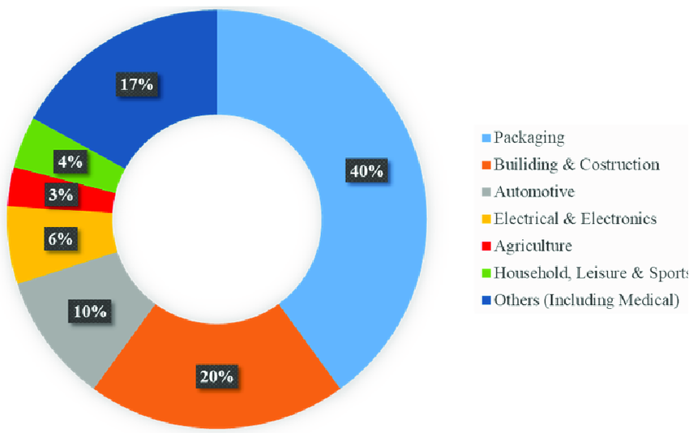

Fletcher, N. (2024). Plastic waste and rubbish in Lake Rotorua. New Zealand Herald. Retrieved August 19, 2024, from New Zealand Herald
Plastic pollution is a serious problem that affects ecosystems all around the world. It's caused by the widespread use of plastic items like bottles, packaging, and other everyday products, as well as by industrial activities. This pollution threatens rivers, oceans, and land-based environments alike. One of the main issues with plastic is that it takes an incredibly long time to break down, sticking around in the environment for hundreds or even thousands of years. As it breaks down, it releases harmful chemicals that can harm wildlife, ecosystems, and even human health. In New Zealand, this problem hits close to home, especially for Lake Rotorua, a beloved natural treasure that holds both ecological and cultural significance for the country.
ResearchGate. (2024). Infographic showing the sources of plastic pollution. Retrieved August 19, 2024, from ResearchGate
As plastic pollution continues to accumulate, it's crucial to address the problem through a combination of science, cultural values, and community engagement. This website is dedicated to exploring the causes, impacts, and potential solutions for plastic pollution in Lake Rotorua, aiming to raise awareness and inspire action among residents, policymakers, and visitors alike.